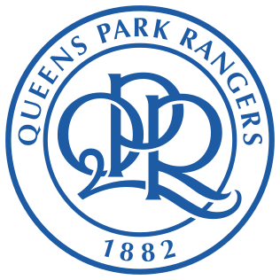
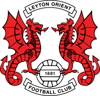
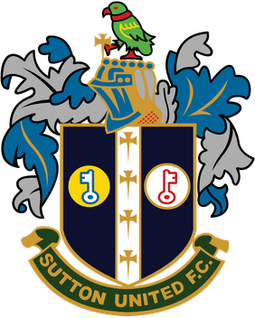

<!DOCTYPE html>
<html>
<head>
	
<title>Football Clubs of London</title>

	<meta charset="utf-8" />
	<meta name="viewport" content="width=device-width, initial-scale=1.0">
	
  <link rel="stylesheet" href="https://unpkg.com/leaflet@1.7.1/dist/leaflet.css"/>
  
  <script src="https://unpkg.com/leaflet@1.7.1/dist/leaflet.js"></script>
  


  <style>
		html, body {
			height: 100%;
			margin: 0;o
		}
		#map {
			width: 100%;
			height: 100%;
            }
  .info { padding: 6px 8px; font: 14px/16px Georgia; background: white, background: rgba(255,255,255,0.8); box-shadow: 0 0 15px rgba(0,0,0,0.2); border-radius: 5px;} 
  .info h4 { margin: 0 0 5px; color: #000; font-size: 18px}
  .legend {  text-align: left; line-height: 18px; color: #000; } .legend i { border-radius: 50%; width: 18px; height: 18px; float: left; margin-right: 8px; opacity: 1; }
	</style>
	
</head>

<body>
<div id="map"></div>

<script>

	var mymap = L.map('map').setView([51.49007486919047, -0.10671575294516497], 10.5);

  // add CartoDB.VoyagerLabelsUnder basemap
  L.tileLayer('https://{s}.basemaps.cartocdn.com/rastertiles/voyager_labels_under/{z}/{x}/{y}{r}.png', {
	attribution: '&copy; <a href="https://www.openstreetmap.org/copyright">OpenStreetMap</a> contributors &copy; <a href="https://carto.com/attributions">CARTO</a>',
	subdomains: 'abcd',
	maxZoom: 20
}).addTo(mymap);
	


//Adds circleMarker for each team
//color is manually chosen to represnt the league the team plays in as of 21/22

	L.circleMarker([51.55494851690169, -0.1084058154884312], 100, {})
	.addTo(mymap).bindTooltip("<b>Arsenal</b></br>Emirates Stadium</br>Founded: 1886</br></br>")
	.setStyle({color: 'purple', fillOpacity: 1, radius: 5});

  L.circleMarker([51.49080374652908, -0.28865087585357135], 100, {})
	.addTo(mymap).bindTooltip("<b>Brentford</b></br>Brentford Community Stadium</br>Founded: 1889</br></br>")
	.setStyle({color: 'purple', fillOpacity: 1, radius: 5});
	
	L.circleMarker([51.48166844858608, -0.19095385334470594], 100, {})
	.addTo(mymap).bindTooltip("<b>Chelsea</b></br>Stamford Bridge</br>Founded: 1905</br></br>")
	.setStyle({color: 'purple', fillOpacity: 1, radius: 5});
	
	L.circleMarker([51.39825943805512, -0.08545029962167883], 100, {})
	.addTo(mymap).bindTooltip("<b>Crystal Palace</b></br>Selhurst Park</br>Founded: 1905</br></br>")
	.setStyle({color: 'purple', fillOpacity: 1, radius: 5});
	
	L.circleMarker([51.60424268460654, -0.0662140873991314], 100, {})
	.addTo(mymap).bindTooltip("<b>Tottenham Hotspur</b></br>Tottenham Hotspur Stadium</br>Founded: 1882</br></br>")
	.setStyle({color: 'purple', fillOpacity: 1, radius: 5});
	
	L.circleMarker([51.538671021367385, -0.016471989886704817], 100, {})
	.addTo(mymap).bindTooltip("<b>West Ham United</b></br>London Stadium</br>Founded: 1895</br></br>")
	.setStyle({color: 'purple', fillOpacity: 1, radius: 5});
	
	L.circleMarker([51.47490974725173, -0.22160679520360577], 100, {})
	.addTo(mymap).bindTooltip("<b>Fulham</b></br>Craven Cottage</br>Founded: 1879</br></br>")
	.setStyle({color: 'purple', fillOpacity: 1, radius: 5});
	
	L.circleMarker([51.48594138860855, -0.05090098993046205], 100, {})
	.addTo(mymap).bindTooltip("<b>Millwall</b></br>The Den</br>Founded: 1885</br></br>")
	.setStyle({color: 'gold', fillOpacity: 1, radius: 5});
	
	L.circleMarker([51.50928165701373, -0.2321071692834658], 100, {})
	.addTo(mymap).bindTooltip("<b>Queens Park Rangers</b></br>Kiyan Prince Foundation Stadium</br>Founded: 1882</br></br>")
	.setStyle({color: 'gold', fillOpacity: 1, radius: 5});
	
	L.circleMarker([51.43153389008763, -0.1866770131492159], 100, {})
	.addTo(mymap).bindTooltip("<b>AFC Wimbledon</b></br>Plough Lane</br>Founded: 2002</br></br>")
	.setStyle({color: 'red', fillOpacity: 1, radius: 5});
	
	L.circleMarker([51.48646068372516, 0.03652809097134187], 100, {})
	.addTo(mymap).bindTooltip("<b>Charlton Athletic</b></br>The Valley</br>Founded: 1905</br></br>")
	.setStyle({color: 'silver', fillOpacity: 1, radius: 5});
	
	L.circleMarker([51.560154562610855, -0.01261307475991032], 100, {})
	.addTo(mymap).bindTooltip("<b>Leyton Orient</b></br>Brisbane Road</br>Founded: 1881</br></br>")
	.setStyle({color: 'red', fillOpacity: 1, radius: 5});
	
	L.circleMarker([51.36761203750326, -0.20431504588640761], 100, {})
	.addTo(mymap).bindTooltip("<b>Sutton United</b></br>Gander Green Lane</br>Founded: 1898</br></br>")
	.setStyle({color: 'red', fillOpacity: 1, radius: 5});
  
  
  L.control.scale().addTo(mymap);
  
  
  
  
var legend = L.control({ position: "bottomleft"});

legend.onAdd = function(mymap) {
  var div = L.DomUtil.create("div", "info legend");
  div.innerHTML += "<b>League Status for 22-23 Season</b></br>";
  div.innerHTML += '<i style="background: purple"></i><span>Premier League</span><br>';
  div.innerHTML += '<i style="background: gold"></i><span>EFL Championship</span><br>';
  div.innerHTML += '<i style="background: silver"></i><span>EFL League One</span><br>';
  div.innerHTML += '<i style="background: red"></i><span>EFL League Two</span><br>';

  

  return div;
};

legend.addTo(mymap);
  
  
  
  
  
  var info = L.control();

	info.onAdd = function (map) {
		this._div = L.DomUtil.create('div', 'info');
		this.update();
		return this._div;
	};

	info.update = function (props) {
		this._div.innerHTML = '<center><h4>Football Clubs of London</h4>' + 'The most populous city in the UK is home</br>to some of the most popular football clubs in</br>the world. The points on this map represent</br>the home stadium for the 13 professional</br>clubs in London. Hover over the points to</br>see what teams they are, where they play,</br>and when they were founded!';
	};

	info.addTo(mymap);


</script>

</body>
</html>